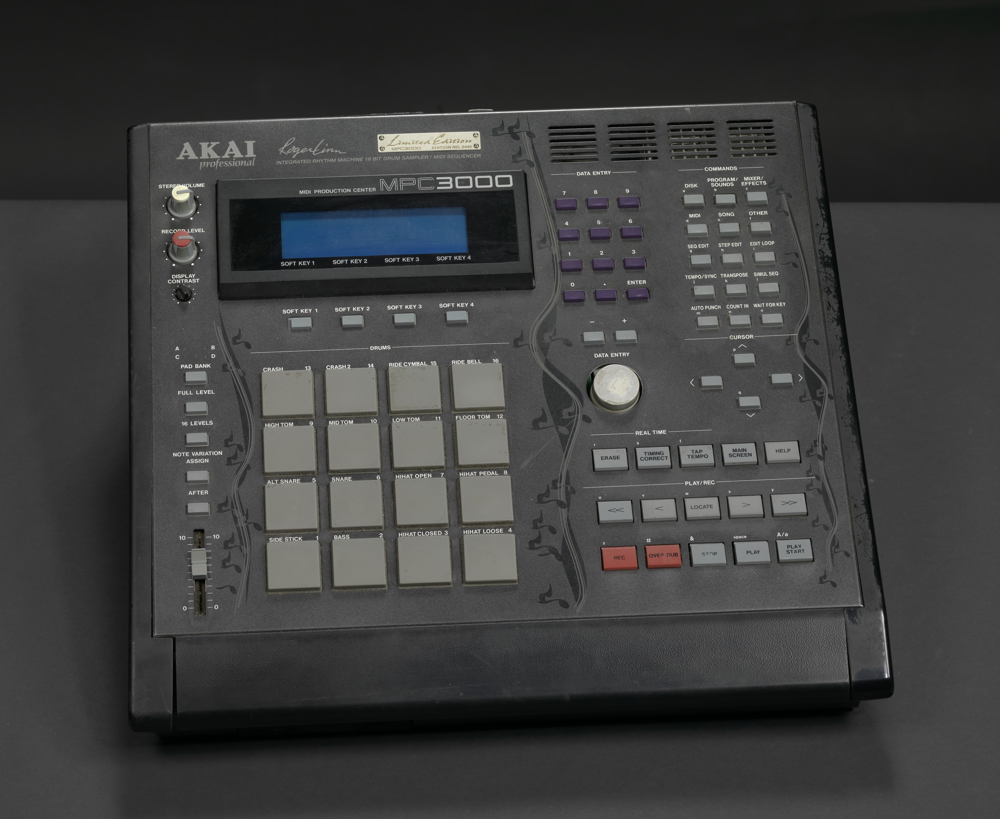

FAF.PCAS25.1 · MIDTERM 2 CONCEPTUAL DEFENSE
CrateTrack
AI-assisted intra-track passage discovery for sample-based music producers.
Intra-track passage retrieval: from manual digging to instant timecodes.
Less Scrubbing.
More Music.
—
Precision Retrieval: Replaces hours of manual playhead scrolling with instant one-click passage audition.
—
Zero-Storage Architecture: 100% legal, scalable client-side timestamp pointer framework.
—
Team 16 (FAF.PCAS25.1): Andrei Simon, Bogdan Glavan, Thuasar (Lead).
—
Technical University of Moldova: Problem-Based Learning · Fall 2026.

Technical University of Moldova
FAF.PCAS25.1 · Ready for Defense
FAF.PCAS25.1 · Ready for Defense
CrateTrack: Transforming intra-track sample discovery for modern music creators.